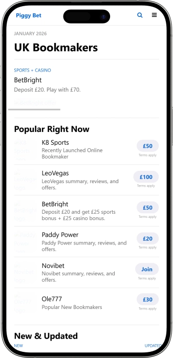

Exclusive welcome offer of
Exclusive welcome bonus of
Play Premium Casino Games & Sports Betting in the UK
Top Casinos
Bonus Details
Casino
Bonuses
Rate
Free Spins
More Info
Get
Advantages
- Looking for a reliable UK online casino with sports betting? PiggyBet offers licensed gaming, instant deposits, competitive odds, and 24/7 customer support. Here's what sets us apart:
-
Licensed by UK Gambling Commission with fair play guarantee
-
Sports betting with competitive odds on football, tennis, and racing
-
Live casino with real dealers powered by Evolution Gaming
-
Instant deposits and fast withdrawals via PayPal, Visa, Mastercard
-
Mobile-optimized platform for iOS and Android devices
-
24/7 customer support in English via live chat and email
- Join thousands of UK players enjoying secure gaming and competitive sports betting. Our support team is always ready to assist you with any questions or concerns.
PiggyBet App


About PiggyBet Online Casino
PiggyBet has established itself as a trusted name in UK online gaming. Our mission is to provide players with fair, entertaining, and secure betting experiences. We combine sports betting with casino games from industry-leading providers.
- Launched comprehensive online gaming platform
- Integrated live dealer casino with real-time streaming
- Expanded sports betting markets to cover global events
- Received UK Gambling Commission full licensing approval
We operate under strict UK Gambling Commission regulations ensuring player protection. Our platform uses 256-bit SSL encryption to safeguard your personal and financial data. All casino games are tested by independent labs for fairness. We continuously enhance our gaming library and betting markets. Our commitment to responsible gambling includes deposit limits and self-exclusion tools. Discover why UK players trust PiggyBet for their gaming entertainment.
Complete Guide to UK Online Casino Gaming
UK Online Casino Gaming: Everything You Need to Know
The UK online casino industry represents one of the most regulated and player-friendly gambling markets in the world. With strict oversight from the UK Gambling Commission, players can enjoy casino games, slots, live dealer tables, and sports betting with confidence. Understanding how to choose a licensed platform, maximize bonuses, and practice responsible gaming is essential for an enjoyable experience. This comprehensive guide covers everything from game selection to payment methods, helping you make informed decisions about your online gaming journey.
Understanding UK Online Casino Licensing
The UK Gambling Commission (UKGC) maintains some of the strictest licensing standards globally. Any online casino operating in the UK must hold a valid UKGC license, which requires operators to meet rigorous standards for fair play, security, and responsible gambling. Licensed casinos undergo regular audits to ensure random number generators (RNG) produce truly random outcomes. Players should always verify a casino's license number, which must be displayed prominently on the website footer. This regulatory framework protects your funds, ensures fair gaming, and provides recourse if disputes arise with an operator.
Beyond licensing, UK casinos must implement robust anti-money laundering procedures and verify player identities. This means you'll need to provide identification documents before making withdrawals, a process known as KYC (Know Your Customer). While this may seem inconvenient, it protects both you and the operator from fraud. Licensed operators also participate in GAMSTOP, the UK's national self-exclusion scheme, allowing players to voluntarily exclude themselves from all UKGC-licensed sites. These protective measures demonstrate the commitment to safe, responsible gaming that defines the UK market.
Exploring Casino Game Categories
Online casinos offer diverse gaming options catering to different preferences and skill levels. Slot machines remain the most popular choice, featuring themes ranging from ancient civilizations to modern pop culture. Modern video slots include multiple paylines, bonus rounds, free spins, and progressive jackpots that can reach millions of pounds. Popular titles from providers like NetEnt, Microgaming, and Pragmatic Play combine engaging graphics with innovative gameplay mechanics. Slots appeal to casual players due to their simplicity, though understanding return-to-player (RTP) percentages helps identify games offering better long-term value.
Table games represent the traditional casino experience, with digital versions of blackjack, roulette, baccarat, and poker. These games often feature lower house edges compared to slots, particularly when players employ optimal strategy. Blackjack variants like Atlantic City and European Blackjack offer different rules affecting the house advantage. Roulette comes in European (single zero) and American (double zero) versions, with European roulette providing better odds. Many platforms also offer game variations with side bets and special rules, adding variety to classic gameplay. Strategy guides and practice modes help players learn game rules before wagering real money.
- Video Slots: Feature-rich games with multiple paylines, bonus rounds, free spins, and engaging themes. RTP typically ranges from 94% to 98%, with popular titles including Starburst, Gonzo's Quest, and Book of Dead.
- Progressive Jackpots: Networked slots where a portion of each bet contributes to a growing jackpot pool. Games like Mega Moolah and Mega Fortune have created numerous millionaires through life-changing payouts.
- Classic Table Games: Digital versions of blackjack, roulette, baccarat, and poker with various rule variants. These games often feature lower house edges and allow strategic play to improve odds.
- Video Poker: Skill-based games combining slot mechanics with poker hand rankings. Popular variants include Jacks or Better, Deuces Wild, and Joker Poker, with some offering RTP above 99% with perfect strategy.
- Live Dealer Games: Real-time streaming from professional studios featuring human dealers. Includes live blackjack, roulette, baccarat, and game show formats like Dream Catcher and Monopoly Live.
- Specialty Games: Includes scratch cards, keno, bingo, and virtual sports. These games provide quick entertainment with simple rules and instant results, perfect for casual gaming sessions.
Live Dealer Casino Experience
Live dealer games bridge the gap between online convenience and land-based casino atmosphere. Professional dealers host games from dedicated studios, streaming high-definition video directly to your device. Players place bets through a digital interface while watching real cards dealt or roulette wheels spun. This format eliminates concerns about RNG fairness, as you see every action in real-time. Evolution Gaming, Playtech, and Pragmatic Play Live lead the industry with innovative game shows combining traditional casino elements with entertainment show formats.
Live casino tables typically feature higher minimum bets than standard digital games, though many operators offer tables starting from just £1. VIP tables cater to high rollers with betting limits reaching thousands per hand. Interactive features allow players to chat with dealers and fellow participants, creating social engagement missing from standard online games. Multiple camera angles, slow-motion replays, and detailed statistics enhance the experience. Popular live formats include Lightning Roulette with multiplied payouts, Speed Baccarat for faster gameplay, and Infinite Blackjack where unlimited players can join a single table.
Maximizing Casino Bonuses and Promotions
Welcome bonuses attract new players with matched deposits, free spins, or risk-free bets. A typical offer might match your first deposit by 100% up to £200, effectively doubling your starting bankroll. However, bonuses come with wagering requirements (also called playthrough requirements) specifying how many times you must bet the bonus amount before withdrawing. For example, a £100 bonus with 40x wagering requires £4,000 in total bets. These requirements prevent bonus abuse while giving players genuine chances to profit. Always read terms carefully, noting game contributions (slots usually count 100%, table games often count less) and maximum bet limits while wagering.
Free spins promotions provide opportunities to try new slot games without risking your own funds. Casinos offer free spins as part of welcome packages, deposit bonuses, or standalone promotions. Winnings from free spins typically require wagering before withdrawal, though requirements are often lower than deposit bonuses. Reload bonuses reward existing players with matched deposits on subsequent funding. Cashback offers return a percentage of losses over a specific period, providing a safety net during unlucky sessions. VIP programs reward loyal players with exclusive bonuses, higher withdrawal limits, dedicated account managers, and special event invitations.
- Welcome Deposit Match: Casinos match your first deposit by a percentage (typically 50% to 200%) up to a maximum amount. This immediately increases your playing bankroll, though wagering requirements apply before withdrawals.
- No Deposit Bonuses: Small bonuses (£5-£20) or free spins awarded simply for registering an account. These allow risk-free exploration of the casino, though winnings face strict wagering requirements and withdrawal caps.
- Reload Bonuses: Ongoing promotions for existing players, typically offering smaller match percentages on additional deposits. These keep your bankroll healthy and reward continued loyalty to the platform.
- Free Spins Packages: Specified number of spins on selected slot games, either bundled with deposit bonuses or offered independently. Winnings from free spins usually require wagering before they become withdrawable funds.
- Cashback Offers: Return a percentage (typically 5-25%) of net losses over a weekly or monthly period. Cashback is usually paid as bonus funds with lower wagering requirements, providing a second chance on unlucky runs.
Banking Methods and Transaction Security
UK online casinos support multiple payment methods catering to different preferences for speed, privacy, and convenience. Debit cards (Visa and Mastercard) remain the most common deposit method, offering instant funding and wide acceptance. However, UK regulations now prohibit credit card gambling deposits to prevent debt-related problem gambling. E-wallets like PayPal, Skrill, and Neteller provide fast deposits and often faster withdrawals than traditional banking methods. Many casinos prioritize e-wallet transactions, processing withdrawals within 24 hours compared to 3-5 business days for bank transfers.
Prepaid cards like Paysafecard allow anonymous deposits by purchasing vouchers with cash at retail locations. While deposits are instant, these cards cannot receive withdrawals, requiring an alternative method for cashing out. Bank transfers suit larger transactions but involve longer processing times. Newer payment methods include mobile payment services like Apple Pay and Google Pay, offering one-touch deposits via stored payment credentials. Cryptocurrency casinos accepting Bitcoin and other digital currencies provide additional privacy and often lower fees, though UK regulatory attitudes toward crypto gambling remain cautious. Always verify payment method fees, processing times, and minimum/maximum transaction limits before depositing.
Responsible Gambling and Player Protection
Responsible gambling forms the cornerstone of UK casino operations. All UKGC-licensed operators must provide tools helping players maintain control over their gaming activity. Deposit limits allow you to cap daily, weekly, or monthly spending, preventing impulsive overspending during losing streaks. Loss limits restrict total losses over specified periods, while session time limits remind you how long you've been playing. Reality checks interrupt gameplay at set intervals, prompting you to review your activity and decide whether to continue. These features work proactively, helping you gamble within comfortable limits rather than reacting after problems develop.
Self-exclusion options range from temporary cooling-off periods (24 hours to 6 weeks) to permanent account closure. GAMSTOP provides national self-exclusion across all UK-licensed sites simultaneously, creating a comprehensive barrier for those needing extended breaks. Operators must also train staff to recognize problem gambling indicators and intervene appropriately. Resources like BeGambleAware, GamCare, and the National Gambling Helpline offer free confidential support, counseling, and treatment referrals. Remember that gambling should be entertainment, not a way to make money or solve financial problems. If gambling stops being fun or starts causing stress, use available tools to take a break. The best online experience balances enjoyment with personal wellbeing and financial responsibility.
- Set Deposit Limits: Cap your daily, weekly, or monthly deposits to prevent spending more than you can afford. Limits take effect immediately when decreased but require a cooling-off period when increased.
- Use Loss Limits: Restrict total net losses over specified timeframes. This feature helps prevent chasing losses during unlucky sessions and maintains control over your entertainment budget.
- Enable Reality Checks: Set periodic reminders displaying how long you've been playing and your win/loss status. These interruptions help maintain awareness and prevent losing track of time during extended sessions.
- Take Breaks When Needed: Use cooling-off periods (24 hours to 6 weeks) to step away from gambling without permanently closing your account. Breaks help regain perspective and prevent impulsive decisions.
- Consider GAMSTOP: National self-exclusion scheme blocking access to all UK-licensed gambling sites. This comprehensive tool suits those needing extended breaks or recognizing problematic gambling patterns.
- Seek Support Resources: Organizations like BeGambleAware and GamCare offer free confidential assistance. Don't hesitate to reach out if gambling causes financial, relationship, or emotional difficulties.
Software Providers
Sports Betting Strategies and Markets Guide
Master Sports Betting: Markets, Strategies, and Tips
Sports betting combines entertainment with strategic thinking, allowing fans to engage more deeply with their favorite sports. Unlike pure casino games where house edges remain fixed, sports betting rewards research, analysis, and discipline. Understanding different bet types, reading odds formats, managing your bankroll, and identifying value opportunities separates successful bettors from casual punters. The UK sports betting market offers extensive coverage of football, horse racing, tennis, cricket, and countless other events. With mobile betting apps providing instant access to live markets, opportunities exist around the clock. This guide explores essential concepts, strategies, and market types to improve your betting experience and decision-making.
Understanding Betting Odds Formats
UK bookmakers primarily use fractional odds (5/1, 2/1, 4/5), though decimal (6.00, 3.00, 1.80) and American (+500, +200, -125) formats are also common. Fractional odds show profit relative to stake: 5/1 means you win £5 for every £1 wagered, plus your stake returned. Decimal odds represent total return including stake: 6.00 odds return £6 for every £1 bet (£5 profit plus £1 stake). American odds use positive numbers for underdogs (showing profit on £100 stake) and negative numbers for favorites (showing stake needed to profit £100). Understanding implied probability helps identify value: 2/1 fractional odds equal 3.00 decimal, representing approximately 33% implied probability of the outcome occurring.
Bookmakers include a profit margin (overround) in their odds, meaning the combined probabilities of all outcomes exceed 100%. Comparing odds across multiple bookmakers reveals which offers the best value for specific bets. Odds comparison websites aggregate prices from dozens of operators, highlighting the best available odds for any market. Even small differences compound over time: consistently getting 11/10 instead of evens on similar bets significantly impacts long-term profitability. Live betting odds fluctuate constantly based on in-game events, creating opportunities to find value as bookmakers adjust to unfolding action. Understanding how odds relate to probability forms the foundation for identifying situations where bookmaker odds don't accurately reflect true outcome likelihood.
Popular Sports Betting Markets
Match result (1X2) betting represents the simplest market: predicting whether the home team wins, the away team wins, or the match ends in a draw. Football betting extends far beyond match outcomes with markets on total goals, both teams to score, correct score, first goalscorer, corners, cards, and countless other propositions. Each market requires different analytical approaches: total goals analysis considers team attacking and defensive statistics, while first goalscorer markets factor in penalty takers and set-piece specialists. Accumulators (parlays) combine multiple selections into a single bet with multiplied odds, offering potential for significant returns from small stakes, though all selections must win for the bet to succeed.
Handicap betting levels the playing field between mismatched opponents by applying virtual advantages or disadvantages. Asian handicaps eliminate draw possibilities by using half-goal or quarter-goal lines, creating two-way markets with potentially better odds than traditional 1X2 betting. Over/under markets predict whether total goals, points, or other statistics exceed or fall below specified thresholds. Prop bets (propositions) cover specific in-game events like next team to score, time of first goal, or individual player performances. Live betting allows wagering on matches in progress, with odds updating in real-time based on current score, time remaining, and momentum. Successful live betting requires quick decision-making and deep sports knowledge to spot value before bookmakers adjust their lines.
- Match Result (1X2): Traditional three-way market predicting home win, draw, or away win. Simple yet effective for league games where you have strong opinions on likely outcomes based on form and statistics.
- Both Teams to Score: Popular football market predicting whether both teams find the net during the match. Analysis focuses on attacking prowess versus defensive vulnerabilities rather than predicting winners.
- Over/Under Goals: Predict whether total goals exceed or fall below a specified line (typically 2.5 goals in football). Consider team styles, recent scoring trends, and head-to-head history when evaluating these markets.
- Asian Handicap: Eliminates draw possibility by applying virtual goal advantages/disadvantages. Quarter-goal lines (0.25, 0.75) split stakes between adjacent handicaps, offering insurance against narrow outcomes.
- Correct Score: High-odds market predicting exact final score. Requires deep analysis and typically suits matches where you anticipate specific scorelines based on tactical matchups and form.
- Anytime/First Goalscorer: Predict which player scores during the match or opens scoring. Consider starting lineup certainty, recent form, penalty takers, and set-piece responsibilities when selecting players.
Bankroll Management Fundamentals
Successful sports betting requires disciplined bankroll management to survive inevitable losing streaks. Your bankroll represents the total amount dedicated exclusively to betting, separate from essential living expenses. Professional bettors typically risk 1-5% of their bankroll per bet, adjusting stake sizes based on confidence level and perceived value. Flat betting (consistent stake sizes) provides stability and limits variance, while proportional staking (betting percentage of current bankroll) automatically adjusts to winning and losing runs. Never chase losses by increasing stakes to recover previous losses quickly, as this leads to reckless decisions and accelerated bankroll depletion.
Track all bets in a spreadsheet recording date, sport, market, odds, stake, result, and profit/loss. This creates data revealing your strengths and weaknesses across different sports, markets, and strategies. You might discover profitability in specific leagues while consistently losing on others, informing smarter specialization decisions. Setting win and loss limits for individual sessions prevents emotional betting during hot or cold streaks. Separate your bankroll from bonus funds, as bonus bets often carry restrictions on odds, markets, or withdrawal timings. Remember that professional bettors measure success over hundreds of bets, not individual wins. A 55% win rate at even odds generates long-term profit despite frequent losses, emphasizing the importance of sustained discipline over short-term results.
Research and Analysis Techniques
Successful sports betting requires thorough research beyond simply following your favorite teams. Team form analysis examines recent results, but context matters more than raw win-loss records. A team might show five consecutive wins against weak opposition while performing poorly against quality opponents. Head-to-head history reveals tendencies in specific matchups: some teams consistently struggle against certain opponents regardless of current form. Injury reports and team news significantly impact outcomes, particularly when key players miss matches. Starting lineup confirmations arrive close to kickoff, creating opportunities to bet with superior information compared to those who placed early wagers.
Statistical analysis identifies trends invisible to casual observers. Expected goals (xG) metrics measure shot quality rather than just shot volume, revealing teams creating better chances than results suggest. Home and away records differ dramatically across teams: some thrive at home while struggling on the road, while others maintain consistency regardless of venue. Weather conditions affect outdoor sports, with heavy rain reducing scoring in football or wind impacting cricket and golf. Motivation factors include teams fighting relegation, pursuing championships, or prioritizing cup competitions over league matches. Combining multiple data sources with subjective match analysis helps identify opportunities where your assessment differs from bookmaker odds, creating potential value situations worth backing with real money.
- Form Analysis: Examine recent results considering opponent quality and match circumstances. Five wins against relegation-threatened teams carries less weight than victories over top-half opponents.
- Team News and Injuries: Key player absences dramatically affect team performance. Monitor official team news, press conferences, and reliable journalists for lineup information before placing bets.
- Statistical Metrics: Advanced statistics like expected goals (xG), possession quality, and shot maps reveal underlying performance trends. Teams outperforming xG may regress, while underperformers could improve.
- Head-to-Head Records: Historical matchup results identify patterns and tendencies between specific opponents. Some teams consistently struggle against certain playing styles regardless of form.
- Motivation Factors: Teams fighting relegation or chasing championships show different intensity levels than mid-table clubs with nothing to play for. Cup prioritization also affects league team selections.
- Weather and Venue: Environmental conditions impact performance in outdoor sports. Heavy rain reduces football scoring, wind affects long passes, and extreme temperatures influence player stamina and tactical approaches.
Football Betting Strategies
Football dominates UK sports betting with extensive market coverage across domestic and international competitions. Premier League matches attract the most betting volume, though lower leagues often provide better value as bookmaker resources concentrate on top-tier games. Backing favorites in accumulators rarely succeeds long-term due to short odds and frequent upsets. Instead, focus on specific markets where research provides genuine edge. Both teams to score works well for matches between attacking-minded sides with defensive weaknesses, while under 2.5 goals suits defensive fixtures between relegation-battling teams prioritizing clean sheets over attacking football.
Asian handicap betting removes draw outcomes, often providing better odds than traditional 1X2 markets. Backing favorites with negative handicaps requires comfortable victory margins, while underdogs receive virtual goal starts making them viable selections even in difficult matches. First half betting limits exposure to late-game chaos and red cards, though odds reflect reduced timeframes. Set-piece markets consider which teams excel at corners and free kicks, while card betting analyzes referee tendencies and team disciplinary records. In-play betting rewards watching matches live, identifying momentum shifts before bookmakers adjust odds. However, avoid impulsive in-play wagers based on short-term variance; maintain the same analytical discipline as pre-match betting, waiting for genuinely valuable opportunities rather than betting for entertainment during every match.
Horse Racing and Other Sports Markets
Horse racing represents the UK's second most popular betting market, offering races throughout the day from British and international tracks. Each-way betting covers both win and place outcomes, returning stake if your selection finishes in the top positions (typically top 3-4 depending on field size). Form guides provide essential information including recent results, jockey and trainer statistics, ground conditions preferences, and weight carried. Links between trainers and certain tracks reveal patterns: some yards excel at specific courses due to familiarity with track characteristics. Handicap races attempt to level competition by assigning weights, theoretically giving all horses equal chances. Non-handicap races feature wider ability ranges, often producing more predictable results favoring proven class horses.
Tennis betting suits analytical approaches as individual sports eliminate team dynamics complexity. Serving statistics, surface preferences (grass, clay, hard court), head-to-head records, and fitness levels dominate match outcomes. Live betting thrives in tennis with odds fluctuating throughout matches as momentum shifts between players. Cricket offers diverse markets from match winners to runs scored, top batsmen, and method of dismissal. Golf tournaments span multiple days, allowing in-tournament betting as leaderboards develop. Darts, snooker, and motorsports provide year-round betting opportunities with dedicated followings. Esports betting has emerged as a significant market, covering popular games like League of Legends, Counter-Strike, and Dota with similar market variety as traditional sports. Each sport requires specialized knowledge, suggesting focus on sports you understand deeply rather than spreading attention across everything available.
- Horse Racing: Traditional UK betting market with races throughout the day. Study form guides, trainer/jockey combinations, ground conditions, and each-way opportunities to find value in competitive fields.
- Tennis: Individual sport eliminating team uncertainty. Focus on serving statistics, surface suitability, head-to-head records, and recent form to identify favorable matchups and live betting opportunities.
- Cricket: Traditional English sport with diverse betting markets. Test matches offer multiple days of betting opportunities, while limited-overs formats provide faster-paced action with runs and wicket markets.
- Golf: Multi-day tournaments allowing in-tournament betting as leaderboards develop. Outright winner bets offer high odds, while match betting and top-finish markets provide shorter-term opportunities.
- American Sports: NFL, NBA, MLB, and NHL attract significant UK betting interest. Point spreads and totals dominate these markets, requiring understanding of American odds formats and game dynamics.
- Esports: Rapidly growing market covering competitive video gaming. Popular titles include League of Legends, CS:GO, and Dota 2, with similar betting markets to traditional sports including match winners and handicaps.
Frequently Asked Questions
Creating an account takes just minutes. Click the Sign Up button, provide your email, create a password, and enter basic personal details. You'll need to verify your email address by clicking the link sent to your inbox. Before making withdrawals, complete account verification by uploading identification documents. This KYC process protects your account and ensures compliance with UK Gambling Commission regulations.
The minimum deposit at PiggyBet is £10 for most payment methods including debit cards and e-wallets. This allows new players to explore the platform without significant financial commitment. Some payment methods may have different minimums, which are clearly displayed during the deposit process. There are no fees charged by PiggyBet for deposits, though your bank or payment provider might apply their own charges.
Withdrawal processing times vary by payment method. E-wallets like PayPal typically process within 24-48 hours, while debit card withdrawals take 3-5 business days. Bank transfers may require 5-7 business days. First-time withdrawals require account verification, which can add 24-48 hours to the initial processing time. Once your account is verified, subsequent withdrawals process faster within standard timeframes.
Yes, responsible gambling tools are available in your account settings. You can set daily, weekly, or monthly deposit limits to control spending. Loss limits prevent excessive losses over specified periods, while session time limits help manage playing duration. Reality checks remind you how long you've been active. These tools activate immediately when set or decreased, and take 24 hours when increased to provide a cooling-off period.
PiggyBet operates under a license from the UK Gambling Commission, ensuring strict compliance with British gambling regulations. This licensing guarantees fair play, secure transactions, responsible gambling measures, and player fund protection. All casino games use certified random number generators tested by independent laboratories. Your personal and financial information is protected by 256-bit SSL encryption, the same security used by banks.
PiggyBet offers betting markets on football, horse racing, tennis, cricket, basketball, American sports, and many others. Football coverage includes Premier League, Championship, European leagues, and international competitions. Horse racing features UK and Irish tracks plus major international events. Tennis betting covers ATP, WTA, and Grand Slam tournaments. Live betting is available for most sports with real-time odds updates throughout matches.
Yes, PiggyBet's website is fully optimized for mobile devices. Access the platform through your mobile browser on iOS or Android without downloading an app. The mobile version provides full functionality including casino games, sports betting, deposits, withdrawals, and account management. Live dealer games stream smoothly on modern smartphones, and navigation adapts perfectly to smaller screens for comfortable gaming anywhere.
Click the "Forgot Password" link on the login page and enter your registered email address. You'll receive a password reset link within minutes. Click this link and create a new secure password following the on-screen instructions. For security reasons, reset links expire after 24 hours. If you don't receive the email, check your spam folder or contact customer support for assistance resetting your account access.